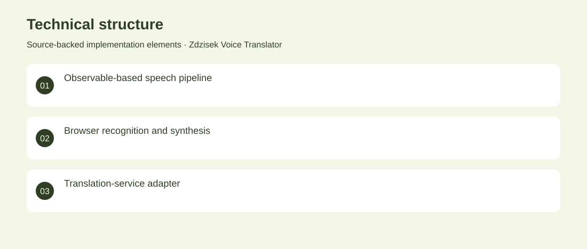

The project
A browser-based voice-translation experiment that connects speech recognition to translation and spoken output. RxJS coordinates the flow from recognised words to Polish-language speech synthesis. Implemented browser speech wrappers and an asynchronous translation pipeline. Archived AI integration experiment. No adoption, revenue or deployment claims are inferred from the repository.
The problem
Voice interfaces need a bridge between recognition, language conversion and an audible response.
The solution
Implemented browser speech wrappers and an asynchronous translation pipeline.
My contribution
TypeScript integration of speech recognition, translation and speech synthesis.
AI capabilities
Browser speech recognition; Machine-translation integration; Speech synthesis
Technical structure

The portfolio cover is an editorial illustration. No live product screenshot is presented for this project.
Showcase assets
{kind=link}
{kind=link}
{kind=link}
New portfolio identity. Newly designed marks are portfolio treatments, not claims of official client branding.